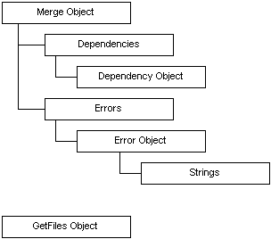

| Microsoft Windows Installer |
MergeMod.dll provides a COM object that implements merge operations and source image generation for merge modules. The main object implements interfaces for C/C++ programs and automation clients, including Visual Basic and VBScript. Note that MergeMod.dll requires that the Msvcrt.dll be installed on the system.
The preferred method for installing MergeMod.dll is by using the Microsoft Windows Installer. The Component ID for the component containing the MergeMod COM interface is {FD153241-37EC-11D2-8892-00A0C981B015}. The same binary can be used on all Windows systems and the DLL will self-register via regsvr32 on older systems.
Note that MergeMod.dll requires that the Msvcrt.dll be installed on the system.
The object model for MergeMod.dll is organized as follows.

The Merge Object is the primary object of the model. The GetFiles Object is a secondary object. Dependencies are collections of Dependency Objects. Errors are collections of Error Objects.